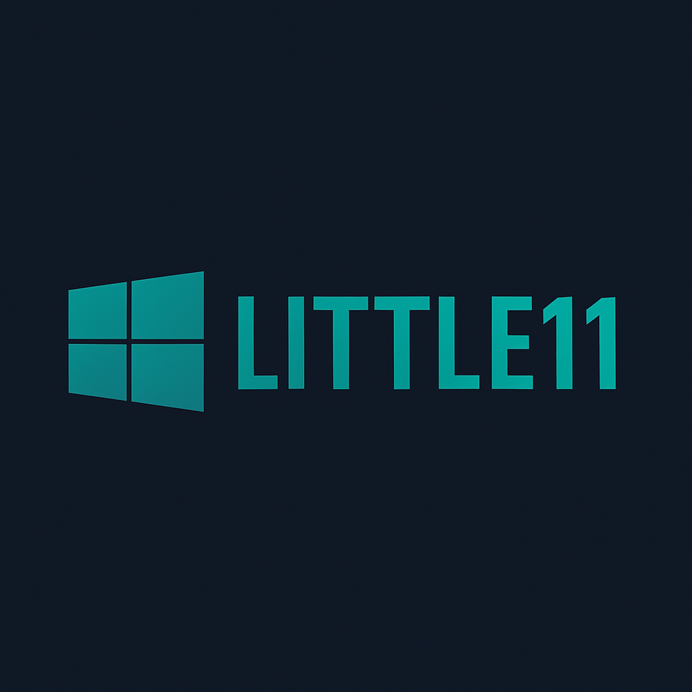

LITTLE11
FPS için optimize edilmiş, ultra hafif Windows 11 deneyimi!
🚀 İndir (ISO)
⚡ Sistem Özellikleri
Temel RAM kullanımı: ~100 MB
Disk kullanımı: 4.5 GB
Windows 11 Home tabanlı
JVM, reg tweak ve Lunar Client destekli
Görev çubuğu özelleştirilebilir
Hiçbir gereksiz uygulama yok